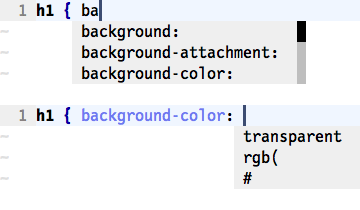

{% include JB/setup %}
{% raw %}
<div>


<table class="arr-recipe" id="sec.omni.compl">
<tr class="calibre14">
<td class="arr-recipe-number">Tip 117</td>
<td class="arr-recipe-name">Autocomplete with Context Awareness</td>
</tr>
</table>
<p id="N1BF24" class="calibre4">
<span class="calibre5">
        Omni-completion is Vim’s answer to intellisense. It provides a list of suggestions that’s tailored for the context of the cursor position. In this tip, we’ll look at how it works in the context of a CSS file.
    </span>
</p>
<div class="figure" id="fig.compl.omni">
<div class="calibre1">

</div>
<div class="figurecaption">
<hr class="calibre37"/>Figure 5. Omni-completion of CSS properties and values</div>
</div>
<p id="N1BF40" class="calibre4">
      Omni-completion is triggered with the <span class="calibre17">&lt;C-x&gt;&lt;C-o&gt;</span> command (see <strong xmlns:str="http://exslt.org/strings" class="calibre10">compl-omni</strong>
<a xmlns:str="http://exslt.org/strings" href="http://vimdoc.sourceforge.net/htmldoc/insert.html#compl-omni">
​</a>). The functionality is implemented as a file-type plugin, so to activate it we have to source these lines of configuration:
    </p>
<table class="processedcode">
<tr class="calibre28">
<td colspan="2" class="calibre33">
<a href="http://media.pragprog.com/titles/dnvim/code/essential.vim">essential.vim</a>
</td>
</tr>
<tr class="calibre28">
<td class="codeprefix" valign="top">
<span> </span>
</td>
<td class="codeline" valign="top">
<div class="calibre29">
​<code class="calibre30">​<strong class="prompt">set</strong> nocompatible​</code>​</div>
</td>
</tr>
<tr class="calibre28">
<td class="codeprefix" valign="top">
<span> </span>
</td>
<td class="codeline" valign="top">
<div class="calibre29">
​<code class="calibre30">​<strong class="prompt">filetype</strong> plugin <strong class="prompt">on</strong>​</code>​</div>
</td>
</tr>
</table>
<p id="N1BF60" class="calibre4">
      We also have to install a plugin that implements omni-completion for the language that we’re working with. Vim ships with support for about a dozen languages, including HTML, CSS, JavaScript, PHP, and SQL. You can find the full list by looking up <strong xmlns:str="http://exslt.org/strings" class="calibre10">compl-omni-filetypes</strong>
<a xmlns:str="http://exslt.org/strings" href="http://vimdoc.sourceforge.net/htmldoc/insert.html#compl-omni-filetypes">
​</a>.
    </p>
<p id="N1BF67" class="calibre4">
<a xmlns:str="http://exslt.org/strings" href="#fig.compl.omni">Figure 5, ​<em class="calibre5">Omni-completion of CSS properties and values</em>​</a>, shows the results of triggering omni-completion in a CSS file in two slightly different contexts. Given “ba” as a fragment of a CSS property, it shows a list of completions, including <code class="cf">background</code>, <code class="cf">background-attachment</code>, and a few others. In this example, <code class="cf">background-color</code> is selected. The second time that omni-completion is triggered, no fragment of text is provided, but Vim can tell from the context that a color is expected, so it offers three suggestions: <code class="cf">#</code>, <code class="cf">rgb(</code>, and <code class="cf">transparent</code>.
    </p>
<p id="N1BF84" class="calibre4">
      The relatively static nature of CSS makes it well suited to omni-completion, but if you try out the feature with a programming language, your mileage may vary. If you’re unsatisfied with the support for a particular language, shop around for an alternative plugin or write your own. To figure out how to write omni-completion plugins, start with <strong xmlns:str="http://exslt.org/strings" class="calibre10">complete-functions</strong>
<a xmlns:str="http://exslt.org/strings" href="http://vimdoc.sourceforge.net/htmldoc/insert.html#complete-functions">
​</a>.
	</p>

<div class="copyright">Copyright © 2012, The Pragmatic Bookshelf.</div>


<script src="scripts/book_local.js" type="text/javascript" class="calibre2"/>
</div>

{% endraw %}

